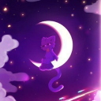

Создаю современные сайты, backend-системы, автоматизацию и атмосферные интерфейсы, а так же разрабатываю Discord-ботов. Готов к новым вызовам и проектам, стремлюсь расти и развиваться в сфере веб-разработки и программирования.

Web & Python Developer Так же известный как Cr1staloriginal в социальных сетях.
Я веб-разработчик и Python-программист, изучаю программирование с декабря 2024 года. Мои основные навыки включают HTML, CSS, JavaScript и Python. Я создаю современные сайты, backend-системы, автоматизацию и атмосферные интерфейсы, а так же разрабатываю Discord-ботов.
HTML используется для создания структуры веб-страниц
95%CSS используется для стилизации веб-страниц
80%Javascript используется для создания интерактивных веб-страниц
60%Python используется для backend-разработки и Discord-ботов
100%Личный сайт-портфолио на котором вы и читаете всё это с анимациями и минималистичным дизайном. Создан с нуля с помощью HTML, CSS и JavaScript, без использования фреймворков. Здесь можно узнать обо мне, моих навыках, проектах и связаться со мной через социальные сети.
Многофункциональный Discord бот. Который умеет играть музыку, управлять сервером, выдавать роли и многое другое. Использует Python и библиотеку discord.py для взаимодействия с Discord API.